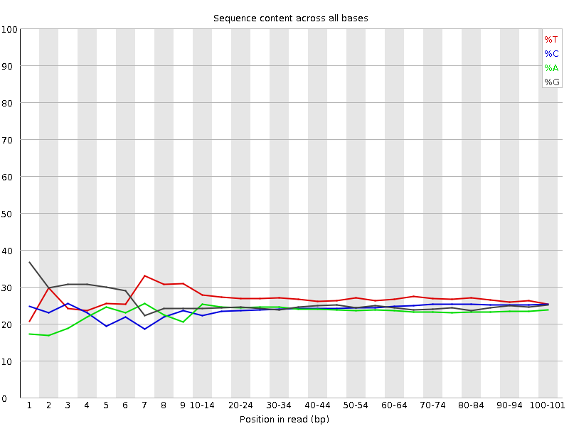
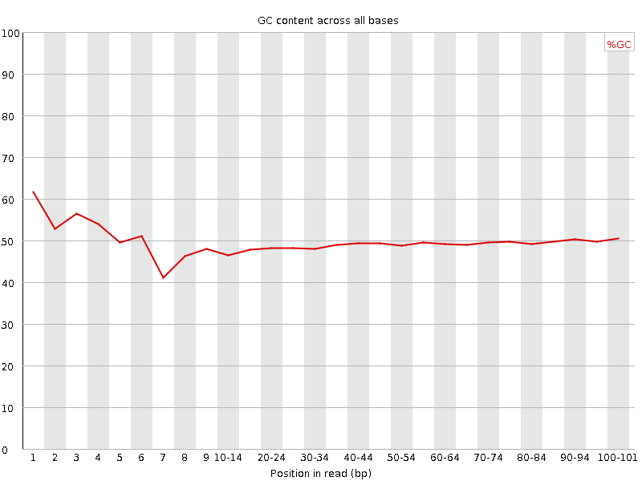
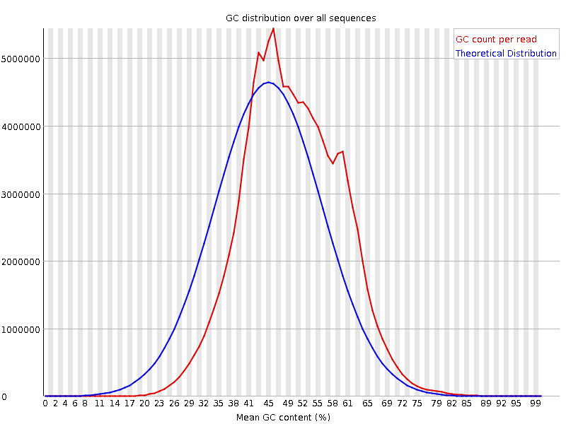
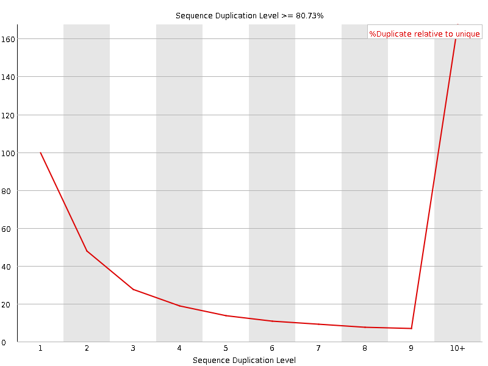
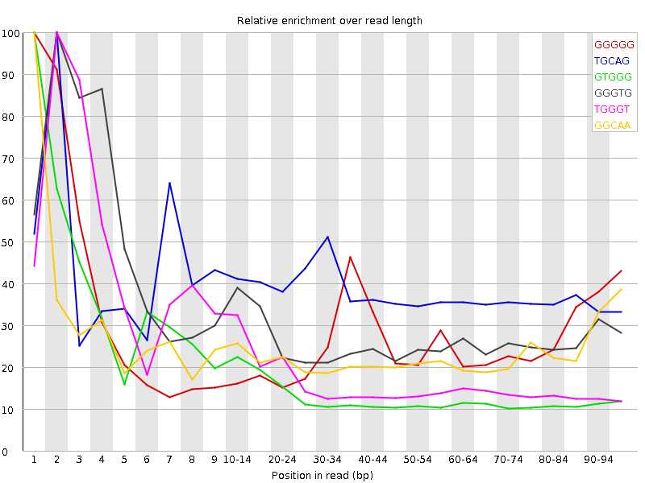

![[OK]](Icons/tick.png) Basic Statistics
Basic Statistics
| Measure | Value |
|---|---|
| Filename | SRR534289_1.fastq |
| File type | Conventional base calls |
| Encoding | Illumina 1.5 |
| Total Sequences | 126255585 |
| Filtered Sequences | 0 |
| Sequence length | 101 |
| %GC | 49 |
![[FAIL]](Icons/error.png) Per base sequence quality
Per base sequence quality

Per sequence quality scores

![[WARN]](Icons/warning.png) Per base sequence content
Per base sequence content

Per base GC content

Per sequence GC content

Per base N content

Sequence Length Distribution

Sequence Duplication Levels

Overrepresented sequences
| Sequence | Count | Percentage | Possible Source |
|---|---|---|---|
| GTATAATACTAAGTTGAGATGATATCATTTACGGGGGAAGGCGCTTTGTG | 371406 | 0.2941699569171534 | No Hit |
| GTGGGTATAATACTAAGTTGAGATGATATCATTTACGGGGGAAGGCGCTT | 323982 | 0.2566080542100375 | No Hit |
| GTGTGGGTATAATACTAAGTTGAGATGATATCATTTACGGGGGAAGGCGC | 275266 | 0.21802283043558032 | No Hit |
| GTGCAGTGGCTATTCACAGGCGCGATCCCACTACTGATCAGCACGGGAGT | 273671 | 0.21675951998479911 | No Hit |
| CCCTGTTCTTGGGTGGGTGTGGGTATAATACTAAGTTGAGATGATATCAT | 264712 | 0.20966359626784034 | No Hit |
| GGGTATAATACTAAGTTGAGATGATATCATTTACGGGGGAAGGCGCTTTG | 253849 | 0.2010596204516418 | No Hit |
| TGTGGGTATAATACTAAGTTGAGATGATATCATTTACGGGGGAAGGCGCT | 250648 | 0.19852428706421185 | No Hit |
| GGCAACCTGGTGGTCCCCCGCTCCCGGGAGGTCACCATATTGATGCCGAA | 247221 | 0.19580995169441417 | No Hit |
| ATTTGAAGTAGATAGAAACCGACCTGGATTACTCCGGTCTGAACTCAGAT | 246465 | 0.19521116630206894 | No Hit |
| GCAGTGGCTATTCACAGGCGCGATCCCACTACTGATCAGCACGGGAGTTT | 212121 | 0.16800920133552905 | No Hit |
| GTGGGTTTGTTAGGTACTGTTTGCATTAATAAATTAAAGCTCCATAGGGT | 198630 | 0.15732373344117806 | No Hit |
| GTGGGTGTGGGTATAATACTAAGTTGAGATGATATCATTTACGGGGGAAG | 182251 | 0.14435084198453477 | No Hit |
| GTTCAGATATGTTAAAGCCACTTTCGTAGTCTATTTTGTGTCAACTGGAG | 170690 | 0.13519401933783762 | No Hit |
| GTACTGTTTGCATTAATAAATTAAAGCTCCATAGGGTCTTCTCGTCTTGC | 162717 | 0.12887905117227091 | No Hit |
| CGGGGGAAGGCGCTTTGTGAAGTAGGCCTTATTTCTCTTGTCCTTTCGTA | 149729 | 0.11859198149531365 | No Hit |
| GGTGTGGGTATAATACTAAGTTGAGATGATATCATTTACGGGGGAAGGCG | 146276 | 0.11585705297710196 | No Hit |
| GGTGGGTGTGGGTATAATACTAAGTTGAGATGATATCATTTACGGGGGAA | 146266 | 0.11584913253540427 | No Hit |
Kmer Content

| Sequence | Count | Obs/Exp Overall | Obs/Exp Max | Max Obs/Exp Position |
|---|---|---|---|---|
| GGGGG | 26281780 | 2.2233112 | 8.265261 | 1 |
| TGCAG | 23350775 | 1.9661874 | 5.1258855 | 2 |
| GTGGG | 20122850 | 1.5778 | 10.556141 | 1 |
| GGGTG | 19868420 | 1.5578508 | 5.456014 | 2 |
| TGGGT | 20857510 | 1.5158 | 8.165826 | 2 |
| GGCAA | 14469785 | 1.3802722 | 5.8661885 | 1 |
| CGGGG | 14711800 | 1.2728474 | 6.517218 | 1 |
| GTGCA | 14600230 | 1.2293719 | 5.925926 | 1 |
| GGGGT | 15477655 | 1.2135779 | 6.692077 | 3 |
| TAATA | 14169425 | 1.1921196 | 5.0095677 | 9 |
| GGGTA | 11817495 | 0.9729353 | 5.650374 | 4 |
| GGGTT | 13287370 | 0.9656472 | 5.060467 | 3 |